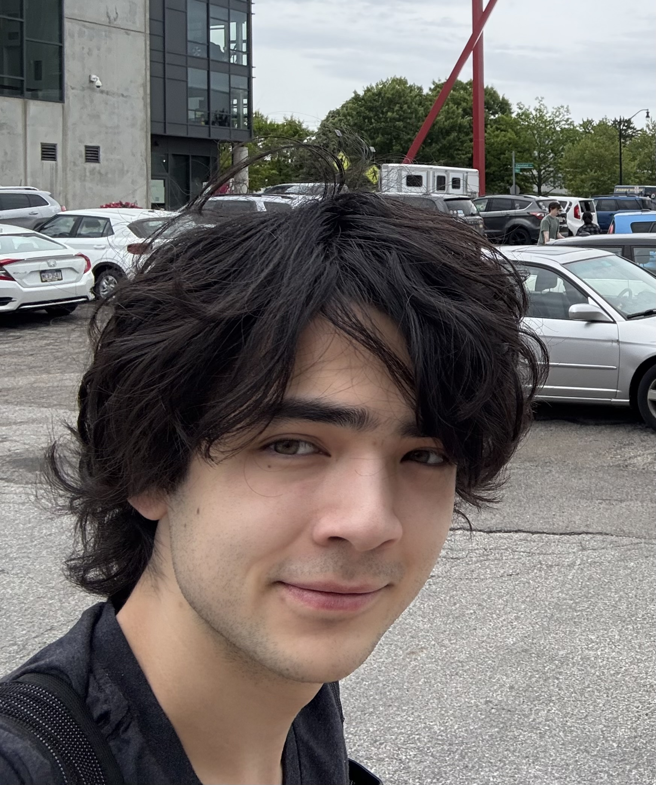
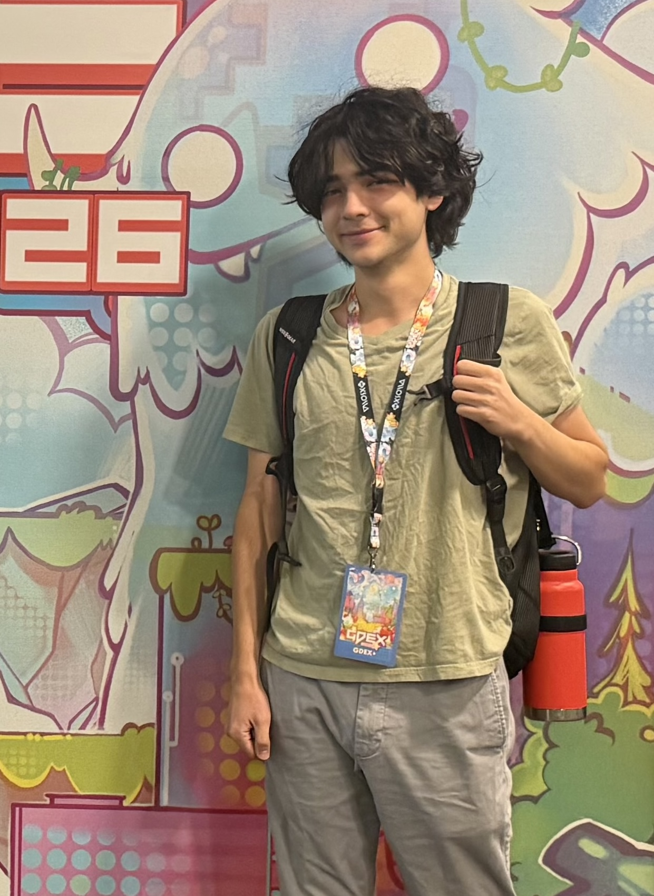

I've been working the past few years as an undergraduate simulation developer for Ohio State with clients such as the National Science Foundation, Honda, and MIT.
My lifelong goal is to make games, and I've been working in Unity Game Engine for the past six years with a focus on realtime physics and procedural vfx.
As a game developer working in a simulation lab, I believe that the creative process is innately human, but I also have a unique background in applied machine learning and language models.